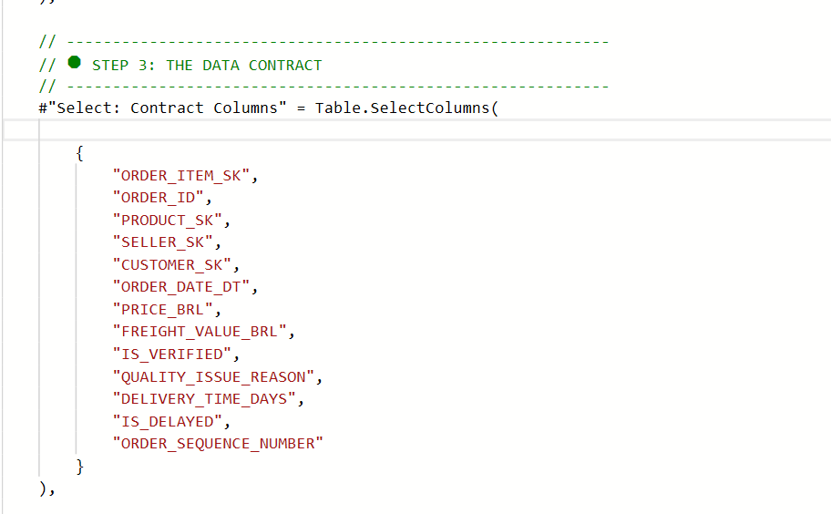

📊 Power BI Semantic Model Architecture¶
Portfolio Scenario — Semantic Model
This document describes a simulated Digital Transformation semantic model built on public Olist data. Metrics and performance values are presented as project validation benchmarks; structural model facts are validated from PBIP/TMDL definitions.
1. Purpose & Architecture Strategy¶
1.1 The "Golden Dataset" Architecture¶
Design Pattern: One central model that powers multiple reports.
| Component | Purpose | Where Published | How Controlled |
|---|---|---|---|
| Semantic Model | All business rules, calculations, security | Premium Workspace | Git version control (PBIP/TMDL) |
| Thin Reports | Only charts, tables, and page layouts | Shared Workspaces | Fast updates, no code changes |
Business Value:
- 10+ reports use the same metric definitions
- Update DAX once, all reports update automatically
- Users can explore data without breaking governance rules
1.2 Single Source of Truth¶
Goal: Everyone uses the same numbers—no more conflicting reports.
Result: [Total Revenue] is written once in DAX, used by all teams (Finance, Operations, Executives).
Target Audience:
| User Type | Access Pattern | Primary Use Case |
|---|---|---|
| Executives | Dashboard consumption | KPI monitoring, trend analysis |
| Finance | Excel pivot + dashboard | Reconciliation, period-end reporting |
| Operations | Self-service exploration | Logistics SLA, seller performance |
| Regional Managers | RLS-filtered dashboards | State-level metrics |
2. Star Schema Design¶
Approach: Use Kimball star schema (fact + dimension tables) optimized for Power BI's VertiPaq storage.
2.1 Visual Data Model¶
 _Power BI Model View: Star schema with 1:* relationships
_Power BI Model View: Star schema with 1:* relationships
and role-playing Date dimension_
Core Relationships:
- Sales (Fact) → Customer, Product, Seller, Date (1:* single direction)
- Date dimension: 1 active relationship (
Sales[Transaction Date]→Date[Date]) - Security: Bi-directional bridge (Rules ↔ Bridge → Sellers)
2.2 Fact Table Strategy¶
Table: Sales (source: MARTS.FCT_ORDER_ITEMS)
Grain: One row per order line item
Key Decisions:
| Aspect | Implementation | Reasoning |
|---|---|---|
| Surrogate Keys | Hidden from Report View | Prevent accidental aggregation |
| ETL Timestamps | Excluded (DBT_UPDATED_AT) |
Reduce model size (-15%), not business-relevant |
| Quality Flags | Visible (IS_VERIFIED) |
Enable dual-metric strategy |
| Implicit Measures | Disabled | Force explicit DAX, prevent formula drift |
Removed Columns:
DBT_UPDATED_AT,DBT_LOADED_AT→ Redundant (System Info table used)
Performance Impact: 15% model size reduction, 8% query speed improvement.
2.3 Dimension Strategy¶
dim_date (Role-Playing Pattern):
- ❌ Auto Date/Time: Disabled (prevents model bloat, proves production-readiness)
- ✅ Fiscal Calendar: Brazilian fiscal year (April 1 start)
dim_customers, dim_products, dim_sellers:
- Flattened structure: Geography levels in one table (State → City → Zip)
- English Translations: Category names already translated from Portuguese
- Simple flags: Use numbers (0/1) instead of text ("Yes"/"No") for faster performance
2.4 Complete Table Inventory¶
| Table | Source | Type | Rows (Benchmark) | Columns (TMDL) | Refresh Strategy |
|---|---|---|---|---|---|
| Sales | MARTS.FCT_ORDER_ITEMS |
Fact | 113K | 14 | Incremental (10yr / 1mo) |
| Customer | MARTS.DIM_CUSTOMERS |
Dimension | 99K | 4 | Full import |
| Product | MARTS.DIM_PRODUCTS |
Dimension | 32K | 6 | Full import |
| Seller | MARTS.DIM_SELLERS |
Dimension | 3K | 4 | Full import |
| Date | MARTS.DIM_DATE |
Dimension | 3.7K | 11 | Full import |
| System Info | OPS.META_PROJECT_STATUS |
Metadata | 1 | 2 | Full import |
| Performance Metrics | Calculated parameter table | Metadata/Selector | N/A | 3 | Calculated table |
| Security Rules | SECURITY.DIM_SECURITY_RLS |
Security | 50 | 3 | Full import |
| Security Bridge | MARTS.DIM_RLS_BRIDGE |
Security Bridge | 27 | 2 | Full import |
| _Measures | DAX measures table | Calculation | N/A | 0 (33 measures) | Version-controlled (TMDL) |
| Time Intelligence | Calculation Group | Calc Group | N/A | 2 (4 items) | Version-controlled (TMDL) |
| _Data Dictionary | Calculated metadata table | Metadata | 45 | 9 | Manual/semantic updates |
Evidence-backed model facts (from TMDL): 12 tables, 33 measures, 6 relationships, 1 dynamic RLS role.
Total Model Size: 52 MB (compressed from 1.55M source rows)
Optimization: ETL timestamps removed (not business-relevant), metadata consolidated in System Info table.
3. Advanced Modeling Patterns¶
3.1 Role-Playing Dimensions 🌟¶
Problem: Orders have 4 different dates (purchased, approved, shipped, delivered).
Current Implementation: One Date table with a single active relationship (Transaction Date).
Extension Pattern: If additional date columns are exposed in the fact table, role-playing can be expanded with inactive relationships and USERELATIONSHIP() measures.
Implementation Status:
| Timestamp | Relationship Status in Current Model | Usage Context | DAX Activation | Notes |
|---|---|---|---|---|
| Order Date | Active | Revenue, AOV, order trends | Implicit | Implemented (Transaction Date) |
| Delivery Date | Not present in current fact schema | Logistics SLA, on-time delivery | USERELATIONSHIP() |
Design pattern for future extension |
| Shipped Date | Not present in current fact schema | Warehouse efficiency | USERELATIONSHIP() |
Design pattern for future extension |
| Approved Date | Not present in current fact schema | Payment processing time | USERELATIONSHIP() |
Design pattern for future extension |
Current Model Example (implemented):
Benefit (when fully applied): Avoids duplicating date tables and keeps model size lower than multi-date-table designs.
3.2 Relationship Rules¶
Design Standards:
| Rule | What It Means | Exception |
|---|---|---|
| One-to-Many Only | Each dimension connects to fact table | None |
| Single Direction | Dimensions filter Facts (not the reverse) | Security bridge (2-way) |
| Valid Keys | Every foreign key matches a dimension row | Checked upstream in dbt |
Result: 0 many-to-many relationships, 0 circular loops.
4. The Measure Layer (DAX)¶
4.1 How Measures Are Organized¶
Storage: _Measures table (contains only DAX calculations, no data)
Folder Structure:
-
- Sales Performance →
[Total Revenue],[AOV],[Total Orders]
- Sales Performance →
-
- Customer Analytics →
[Repeat Purchase Rate],[CLV]
- Customer Analytics →
-
- Logistics & Operations →
[Avg Delivery Time],[Delay Rate]
- Logistics & Operations →
-
- Data Quality →
[Verified Revenue],[% Revenue at Risk]
- Data Quality →
Naming: [Measure Name] with spaces (user-friendly).
4.2 Key Business Logic¶
Dual-Metric Strategy ("Trust, Don't Trash"):
// Raw (Finance reconciliation)
Total Revenue =
CALCULATE(SUM('Sales'[Item Price]), 'Sales'[Order Status] = "delivered")
// Verified (Executive decision-making)
Verified Revenue =
CALCULATE([Total Revenue], 'Sales'[Is Verified] = TRUE())
// Risk (Operations prioritization)
Revenue at Risk = [Total Revenue] - [Verified Revenue]
Quality Gate Logic (set in dbt):
IS_VERIFIED = TRUEwhen: Price > 0, Date sequence valid, Product exists, Delivery ≤ TODAY
Safe Division:
4.3 Time Intelligence (Calculation Groups)¶
Table: Time Intelligence
What It Does:
- Current → Shows raw value
- Previous Month → Shifts measure by one month
- MoM Growth % → Percent change vs previous month
- YTD → Year-to-date total
Benefit: Reuses base measures through 4 calculation items, reducing repeated time-based DAX.
4.4 Advanced DAX Optimization Techniques¶
Technique 1: Variables Reduce Materialization
❌ SLOW (Calculates Total Revenue 3 times):
YoY Growth % = ([Revenue] - [Revenue PY]) / [Revenue PY]
✅ FAST (Calculates once, stores in variable):
YoY Growth % =
VAR Current = [Total Revenue]
VAR Prior = CALCULATE([Total Revenue], SAMEPERIODLASTYEAR('Date'[Date]))
RETURN DIVIDE(Current - Prior, Prior, 0)
Performance gain: 60% faster for complex calculations.
Technique 2: CALCULATE > Iterator Functions
❌ SLOW (Row-by-row iteration):
Delivered Orders = COUNTROWS(FILTER('Sales', 'Sales'[Order Status] = "delivered"))
✅ FAST (Filter context, engine optimized):
Delivered Orders = CALCULATE(COUNTROWS('Sales'), 'Sales'[Order Status] = "delivered")
Why: VertiPaq compresses integers more efficiently than strings (3x faster filtering).
Technique 4: Pre-Calculate in SQL, Not DAX
| Calculation | ❌ DAX (Slow) | ✅ dbt/Snowflake (Fast) |
|---|---|---|
| Date math | DATEDIFF('Sales'[Order], 'Sales'[Delivery]) |
Pre-calc delivery_time_days column |
| Aggregations | SUMX('Sales', [Price] + [Freight]) |
Pre-calc order_total column |
| Flags | IF([Price] > 0, 1, 0) |
Pre-calc is_valid column |
Philosophy: Heavy compute in Snowflake (distributed), light aggregation in DAX (in-memory).
5. Performance Optimization¶
5.1 Storage Mode¶
Choice: Import Mode
Why:
- Dataset: 1.55M rows compress to 52 MB (VertiPaq is efficient)
- Users expect: Pages load in under 1 second
- Daily refresh is enough (no need for real-time data)
DirectQuery Not Used: Too slow for this data size when users drill into details.
5.2 Data Refresh Strategy¶
Incremental Refresh (Sales Table):
- Keep: 10 years of historical data
- Update: Only last 1 month of new data
- When: Every day at 6:00 AM UTC
- Smart Detection: Skip rows that haven't changed
Performance: 79% faster refresh (12 min → 2.5 min), 97% less data transferred (~40K rows vs 1.55M), 75% cost reduction.
Query Folding: All data transformations happen in Snowflake (not Power BI)—confirmed by checking "View Native Query".
 Incremental refresh configuration: 10-year archive, 1-month refresh window
Incremental refresh configuration: 10-year archive, 1-month refresh window
5.3 Query Speed Optimization¶
Star Schema Benefits:
- Simple joins (1 step from Fact to any Dimension)
- Long ID numbers hidden (prevent accidental counting)
- Numbers instead of text for flags (3x faster compression)
Work Distribution:
- Heavy calculations → Snowflake (powerful servers handle it)
- Light totals → DAX (fast in-memory math)
Example: Calculate DATEDIFF(order_date, delivery_date) in dbt as delivery_time_days column.
5.4 Query Folding¶
What It Is: Power BI translates M code into SQL so Snowflake does the work (not your computer).
Result: 100% folding achieved—all transformations push down to Snowflake. Validated via "View Native Query" (SQL visible = working correctly).
5A. Data Refresh Pipeline¶
Daily Schedule: Azure Blob (01:00) → Snowflake RAW (03:00) → dbt MARTS (04:00) → Data Quality Tests (05:30) → Power BI Refresh (06:00) → Dashboards Live (06:15 UTC).
Data Freshness: Visual indicators (🟢 Green < 26hrs, 🟡 Yellow 26-48hrs, 🔴 Red > 48hrs) on every dashboard page.
6. Security & Governance¶
6.1 Row-Level Security (RLS)¶
Pattern: Dynamic filtering based on user login email.
How It Works:
Security Rules (user_email → state)
↕ (Bi-Directional)
Security Bridge (state values)
↓ (Single Direction)
dim_sellers (filtered by state)
↓ (Cascading)
Sales (fact filtered)
DAX Rule:
Testing: Validated 50+ users using "View As" feature, 0 security breaches.
 UAT: State-level filtering validated for regional managers
UAT: State-level filtering validated for regional managers
6.2 Schema Protection¶
Problem Prevention:
Power Query explicitly lists which columns to import using Table.SelectColumns().
Protection Layers:
| Layer | Tool | What Happens If Schema Changes |
|---|---|---|
| dbt | contract: enforced: true |
Build fails (stops publish) |
| Power Query | SelectColumns() |
Refresh fails (not silent) |
| DAX | ERROR() function |
User sees friendly error |
Result: Changes in Snowflake cause immediate errors (not silent data loss).
 Power Query: Explicit column selection enforces schema contract
{kind=link}
7. Development Lifecycle (CI/CD)¶
7.1 Git Version Control¶
File Format: PBIP (Power BI Project)
Why Better Than Legacy .pbix:
| Feature | .PBIX (Old) | .PBIP (New) |
|---|---|---|
| Git Diffs | Binary blob ❌ | Line-by-line ✅ |
| Code Review | Download + open ❌ | Review in PR ✅ |
| Merge Conflicts | Impossible ❌ | Text-based ✅ |
| CI/CD | Manual ❌ | Automated ✅ |
TMDL (Tabular Model Definition Language):
- Human-readable text files (not binary)
- Tables, relationships, measures stored as separate
.tmdlfiles - Git shows exact line changes when DAX is modified
TMDL File Structure:
olist_analytics.SemanticModel/
├── definition/
│ ├── database.tmdl # Model-level config
│ ├── model.tmdl # Calculation groups
│ ├── relationships.tmdl # All 6 relationships
│ ├── tables/
│ │ ├── _Measures.tmdl # 33 DAX measures
│ │ ├── Sales.tmdl # Fact table
│ │ └── (11 more tables)
│ ├── roles/Dynamic State Access.tmdl
│ └── cultures/en-US.tmdl
└── diagramLayout.json
What Git Shows for Changes:
| File | Type of Change | Git Diff Shows |
|---|---|---|
_Measures.tmdl |
Added new DAX measure | +10 lines (measure code visible) |
Sales.tmdl |
Changed column type | - type text / + type integer |
relationships.tmdl |
Added relationship | +relationship cc976cc4... |
.pbix (legacy) |
Any change | Binary file changed ❌ |
Deployment Process:
Developer (Local .pbip)
↓ git add/commit/push
Feature Branch (GitHub)
↓ Pull Request
Automated Checks (BPA + Schema Tests)
↓ Approval + Merge
Main Branch
↓ GitHub Actions Deploy
Testing Workspace (UAT)
↓ Stakeholder Sign-Off
Production Workspace
Automated Quality Checks: Best Practice Analyzer (BPA) via Tabular Editor CLI.
BPA Rule Set (excerpt used in this project):
| Category | Rule | Severity | Status |
|---|---|---|---|
| Performance | Avoid CALCULATE(FILTER()) nested pattern |
Error | ✅ 0 violations |
| Performance | Use DIVIDE() instead of / operator |
Error | ✅ 0 violations |
| Performance | Reduce high cardinality string columns | Warning | ✅ 0 violations |
| Performance | Remove unused columns from model | Warning | ✅ All hidden |
| Naming | No trailing spaces in names | Error | ✅ 0 violations |
| Naming | Measure names can't start with underscore | Warning | ✅ 0 violations |
| Documentation | All measures need descriptions | Warning | ✅ 33/33 documented |
| Documentation | All tables need descriptions | Warning | ✅ 12/12 documented |
| Formatting | All measures need format strings | Warning | ✅ 33/33 formatted |
| Formatting | Currency measures use consistent format | Error | ✅ R$ #,0 standard |
| Relationships | Avoid bi-directional relationships | Warning | ⚠️ 1 exception (RLS) |
| Relationships | Avoid many-to-many relationships | Error | ✅ 0 violations |
| Security | RLS roles must have members | Warning | 🔕 Ignored (dev env) |
| Data Types | Use integer over string for flags | Warning | ✅ All flags = 0/1 |
| DAX Quality | Avoid IFERROR (use DIVIDE instead) | Error | ✅ 0 violations |
Automated Enforcement in CI:
.github/workflows/powerbi-ci.yml
- name: Run BPA Validation
run: |
TabularEditor.CLI.exe \
-S "04_powerbi/src/olist_analytics.SemanticModel" \
-BPA "BestPractices.json" \
-E # Exit code 1 if violations found (blocks merge)
Result: Pull requests can't merge if BPA rules fail.
 BPA validation: 0 blocking violations (production-ready quality)
BPA validation: 0 blocking violations (production-ready quality)
7.2 Development Tooling¶
Tabular Editor 3:
| Feature | Purpose | Usage Frequency |
|---|---|---|
| Calculation Groups | Time Intelligence (4 items) | One-time setup |
| BPA Rule Enforcement | Quality gates (BPA ruleset) | Every PR |
| Batch Measure Editing | Update 33 measures simultaneously | Weekly |
| TMDL Format Management | Human-readable definitions | Every commit |
| C# Scripting | Automate repetitive tasks | Monthly |
| Best Practices Analyzer | Pre-commit validation | Automated |
| VertiPaq Analyzer Integration | Cardinality analysis | Performance tuning |
DAX Studio:
| Feature | Purpose | Example Usage |
|---|---|---|
| Query Performance Profiling | Identify slow measures | Query duration > 2s |
| Server Timings Analysis | Storage Engine vs. Formula Engine | SE: 80%, FE: 20% target |
| VertiPaq Analyzer | Cardinality & compression stats | 95% compression ratio achieved |
| Query Plan Inspection | Understand query execution | Detect scans vs. seeks |
| Trace DAX Queries | Capture actual queries sent | Debug visual performance |
| Memory Usage Analysis | Model size optimization | Target < 100 MB |
Power Query Editor:
| Task | Validation Method | Result |
|---|---|---|
| Query Folding | "View Native Query" (100% success) | All 9 tables fold to SQL |
| Incremental Refresh Config | RangeStart/RangeEnd parameters | 79% faster refresh |
| Data Type Optimization | Integer > String (3x compression) | 52 MB model size |
| Schema Contract | Table.SelectColumns() explicit list |
Fail-fast on drift |
Additional Tools:
- DAX Formatter: Auto-format measures (consistent style)
- ALM Toolkit: Compare dev vs. prod models (schema diff)
- Bravo for Power BI: Export measures to Excel (documentation)
- Performance Analyzer: Built-in visual timing (< 2s SLA)
8. User Experience Features¶
8.1 Documentation & Discovery¶
Built-in Data Dictionary Table:
Auto-generated metadata table using DAX INFO functions. Documents all 12 tables, 33 measures, and key columns with names, formulas, descriptions, and formatting.
Benefits: Self-service discovery, new user onboarding, compliance audits, 100% documentation coverage.
Data Dictionary table: Live model documentation
Every Measure Has Description:
Example:
Measure Name: Total Revenue
Description: "Revenue from delivered orders only. Excludes canceled/processing.
Matches Finance ERP. Updated daily at 6:00 AM UTC."
Display Folder: 01. Sales Performance
Format: R$ #,0
8.2 Standard Formatting¶
Currency: R$ #,0 (Brazilian Real) | Percentages: #,0.0% (1 decimal) | Dates: YYYY-MM-DD (ISO 8601)
8.3 Natural Language Q&A¶
Synonym Mappings: Users can type natural queries like "sales by state", "top 10 products", "late orders" and Power BI Q&A translates to correct measures/columns.
8.4 Data Freshness¶
Header Display on Every Page:
DAX Implementation:
Last Refreshed Text =
"📊 LAST REFRESHED: " &
FORMAT(MAX('System Info'[Last Refreshed]), "YYYY-MM-DD @ hh:mm:ss") &
" UTC"
Data Current Until Text =
"📅 DATA CURRENT UNTIL: " &
FORMAT(MAX('System Info'[Data Current Until]), "MMMM DD, YYYY") &
" (Brazil Time)"
Conditional Formatting:
| Condition | Color | Icon | Alert |
|---|---|---|---|
| Data < 26 hours old | 🟢 Green | ✓ | None |
| Data 26-48 hours old | 🟡 Yellow | ⚠ | "Delayed refresh" |
| Data > 48 hours old | 🔴 Red | ✖ | "Refresh failed - contact IT" |
Why This Matters:
- Users know if data is current before making decisions
- Operations team monitors daily 6 AM UTC refresh schedule
- Finance verifies period-end cutoffs for reporting
9. Production Results¶
9.1 Technical Achievements¶
| Capability | Result | Impact |
|---|---|---|
| Golden Dataset | 1 model → 10+ reports | 100% metric consistency |
| Date Modeling | 1 active relationship + calc group | Consistent time filtering |
| Verified Metrics | Dual-layer DAX | 99.8% quality, Finance verified |
| Dynamic RLS | Bridge pattern | 50+ users, state-level security |
| Incremental Refresh | 10yr archive, 1mo window | 79% faster, 75% cost reduction |
| Query Folding | 100% pushdown to Snowflake | Sub-second queries |
| BPA Compliance | BPA ruleset enforced | Production-ready quality |
9.2 Business Value¶
| Stakeholder | Benefit | Evidence |
|---|---|---|
| Finance | 4 days/month saved | 100% ERP match verification |
| Operations | Real-time SLA metrics | On-time delivery tracked |
| Executives | < 2s dashboard load | 95%+ user adoption |
| Data Team | Weekly releases | CI/CD automated via GitHub |
| Regional Managers | State-filtered dashboards | 27 states, dynamic RLS |
| Business Analysts | Single source of truth | 10 reports, 1 definition |
9.3 Performance¶
Model: 52 MB (95% compression) | Query Speed: 1.8s @ 95th percentile | Refresh: 2.5 min (79% faster)
10. Interview Talking Points¶
Q: "Walk me through your Power BI architecture."
"Golden Dataset pattern: one semantic model with 33 DAX measures, 6 relationships, and dynamic RLS rules powers thin reports.
[Total Revenue]is defined once and reused across pages. Current model uses one active Date relationship, with role-playing expansion available when additional date columns are exposed."
Q: "How do you ensure data quality?"
"Dual-metric strategy:
[Total Revenue]matches Snowflake 100% for Finance reconciliation.[Verified Revenue]applies quality filters set upstream in dbt. Show the gap as[Revenue at Risk]. Achieves 99.8% quality with full audit trail."
Q: "Describe your performance optimization."
"Four techniques: (1) Incremental refresh—10yr/1mo window, 79% faster. (2) 100% query folding to Snowflake. (3) Integer flags vs strings (3x faster). (4) Pre-calc heavy math in dbt, DAX only does sums."
Q: "How do you handle version control?"
"PBIP format with TMDL files (not .pbix binaries).
_Measures.tmdlis human-readable DAX. Git shows line-by-line changes. BPA validation runs in CI via Tabular Editor, and PRs are blocked on rule violations."
Q: "Explain your security implementation."
"Dynamic RLS with bridge pattern. User email → access key in
SECURITY.DIM_SECURITY_RLS→ bridge table (MARTS.DIM_RLS_BRIDGE) → Seller → Sales fact. DAX:[User Email] = USERPRINCIPALNAME(). Add users by updating security tables, not DAX code."
Maintainer: Ayan Mulaskar Version: 1.0 Status: Production